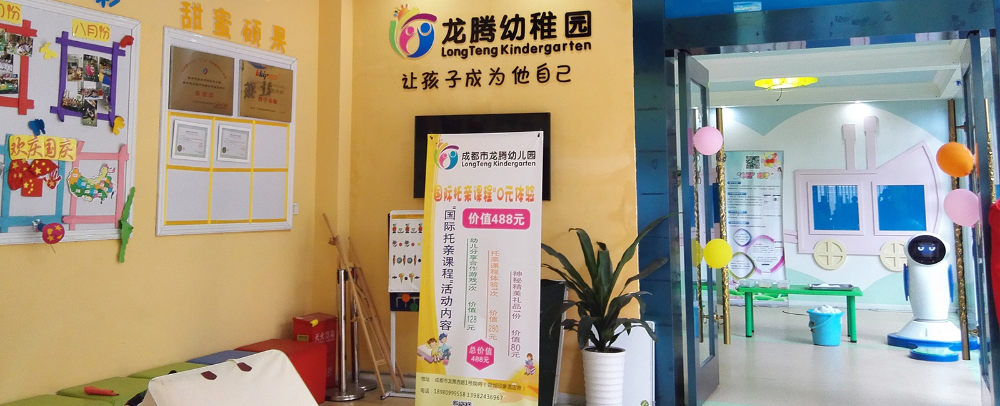
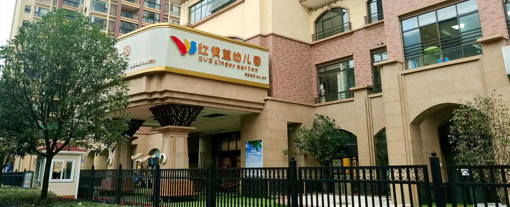

首页
成功案例
关于我们
诚聘英才
龙腾幼儿园

◆ 建园时间:2年 | 人数:200+ | 小诺进入:2016.03 ◆
建园时间2年，人数近200人，2016.3月进入 先采用小诺健康机器人进行晨检，家长和小朋友都很满意；后采用刷一刷二维码智能接送管理终端替换原有的门禁考勤系统进行放学管理和教职工考勤管理。
使用反馈：“
小诺机器人重要的价值体现在两个方面, 首先相比传统晨检，小诺机器人更有趣，小朋友的参与感和体验感会很好；其次，家长们能够方便及时的获取小朋友的晨检信息和放学信息，这在以前条件下根本无法想象和实施。 同时，家长们也能获得更具体和针对性的内容，能够更好的关注孩子的健康成长！”
首家引入“互联网+幼教”的幼儿园，让您更放心。
红黄蓝幼儿园

◆ 建园时间:半年 | 人数:100+ | 小诺进入:2016.09 ◆
作为新园，同时采用小诺健康机器人和刷一刷二维码智能接送管理终端。
使用反馈：“
小诺机器人对幼儿园的最大的价值，我们认为并不是单纯提升了我们的管理水平以及保健医生在晨检这个环节下的效率，而是和我们“互联网+幼教”的办学理念高度吻合，并帮助我们打造了基于安全和健康的独特安全体系，在此前提下，家长更愿意相信我们，选择我们
”
蜀ICP备16008823号
©2016 didano Telecom Equipment Co., Ltd. All rights reserved.